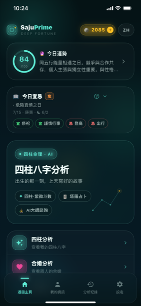
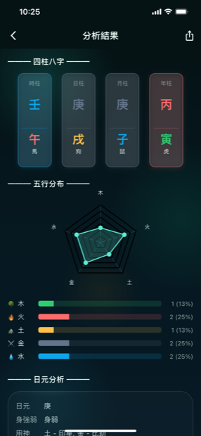
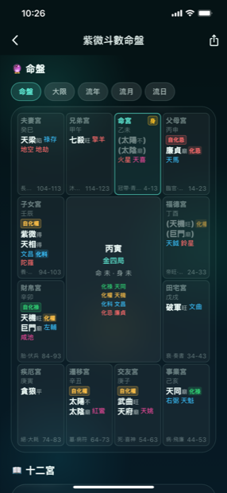
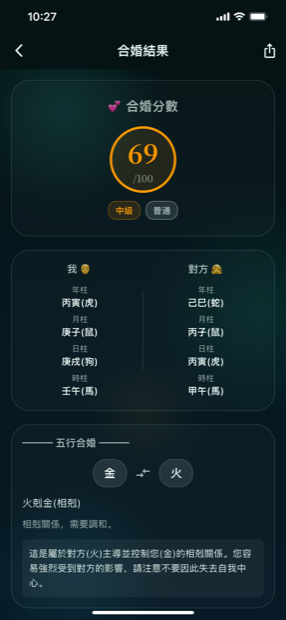
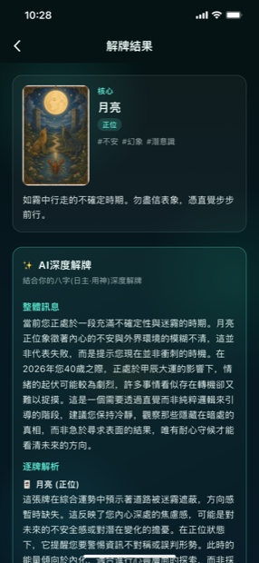
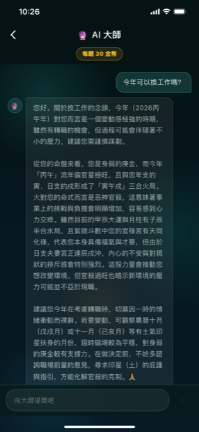

SajuPrime
出生的那一刻，上天写好的故事。
用出生年月日时占算四柱八字、紫微斗数、合婚与塔罗，并向 AI 大师咨询。
出生的那一刻，上天写好的故事。
用出生年月日时占算四柱八字、紫微斗数、合婚与塔罗，并向 AI 大师咨询。
SajuPrime 将东方命理的精华汇聚于一款 AI 命理应用之中。输入出生年月日时，即可排出四柱八字，并自动推算五行分布、日元的身强身弱以及用神，让你一眼看清与生俱来的能量平衡。无需精通万年历，也能轻松而深入地读懂出生那一刻写下的故事。
占算不止于八字。以十二宫解读人生的紫微斗数命盘、两人合婚的分数与五行的相生相剋，以及回应今日之问的塔罗，都汇聚在同一款应用里。塔罗与运势的解读并不停留在牌义本身，而是与你的八字（日元・用神）相结合，透过 AI 深度解读，点出此刻你最需要的讯息。
每天早晨可以查看今日运势分数与宜忌，遇到困惑时还能直接向 AI 大师咨询。SajuPrime 支持中文・한국어・English・日本語 四种语言，目前正在应用商店审核中。上线后，我们会在本页面提供下载链接。
从八字到紫微斗数、合婚、塔罗与 AI 咨询，一款应用全包含
排出年・月・日・时四柱，自动分析五行分布、日元的身强身弱与用神・喜神，呈现你与生俱来的能量平衡。
在命宫・财帛・官禄等十二宫中查看所落主星・辅星与四化（化禄・化权・化科・化忌），并可查看大限・流年・流月・流日的走势。
将两人的命盘并列比较，给出百分制合婚分数、五行的相生相剋关系，以及相处时值得留意之处。
抽取正位・逆位的牌，并结合你的八字（日元・用神）进行 AI 深度解读，给出综合讯息与逐牌解析。
问一句「今年可以换工作吗？」，大师便会以你的八字、紫微斗数与流年为依据，给出量身建议。
每日更新的今日运势分数与宜忌，今天适合做的事与应避免的事，都能在主页一目了然。
可将分析结果保存为图片・PDF 分享，历史分析也能随时在记录中重新查看。
支持中文・한국어・English・日本語，可在应用内随时切换语言。
深海极光风格的神秘界面

主页

四柱八字

紫微斗数

合婚
只需输入出生年月日时，四柱便会为你排出，木・火・土・金・水的五行分布以雷达图一目了然。除日元强弱外，还会推出用神・喜神，让你明白何者过旺、何者不足。
以命宫为中心，在兄弟・夫妻・财帛・官禄・福德等十二宫中呈现所落之星与四化。除命盘外，还能切换大限（十年）・流年・流月・流日，纵观各时期的走势。
抽牌后会显示核心牌的正位・逆位与关键词，并在此基础上结合你的八字（日元・用神）进行 AI 深度解读。以综合讯息与逐牌解析，送上此刻所需的建议。

换工作、感情、财运、健康等人生困惑，都可用自然的语句提问。大师会以你的八字、紫微斗数与今年的流年为依据解读处境，给出关于时机与方向的量身建议。

关于 SajuPrime 的常见疑问
输入出生年月日时，即可分析四柱八字与五行分布、日元的强弱与用神。此外还提供紫微斗数命盘、两人合婚、塔罗解读、今日运势・宜忌，以及 AI 大师咨询，全部集于一款应用。
SajuPrime 的塔罗不止于牌义，而是结合你八字中的日元・用神信息，提供 AI 深度解读。因此即便是同一张牌，也会给出贴合你能量状态的综合讯息与逐牌解析。
SajuPrime 支持中文・한국어・English・日本語 四种语言，可在应用内随时切换。
SajuPrime 是供自我认识与娱乐的参考应用。所提供的运势与建议仅供参考，不能替代医疗・法律・财务等专业判断或重要决定。
目前 SajuPrime 应用正在商店审核中。上线后，我们会在本页面提供 App Store 与 Google Play 的下载链接。